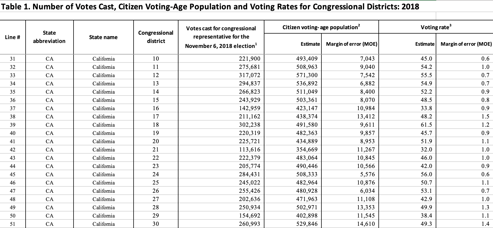

Data collection is the first step in processing data into actionable insights. Data collection involves identifying data sources, selecting relevant data, and retrieving this data. Without doing these first steps carefully, further data analysis would be based on incomplete, irrelevant, or inaccurate data. My goal for data collection was to ensure I used credible sources, obtained all necessary variables, and gathered data in a format that was consistent, organized, and ready for the next stages of data cleaning.
Census API
To find accurate data per congressional district, I turned to the Official United States Census Bureau. This website offers a variety of databases accessible through API calls, including:
- Decennial Census
- Economic Census
- Poverty Statistics
- Annual Survey of Manufactures
American Community Survey (ACS) 1-Year Data
I selected the “American Community Survey (ACS) 1-Year Data” because:
- It focuses on areas with populations of 65,000+.
- It covers a broad range of topics related to social, economic, demographic, and housing characteristics of the U.S. population.
Geographical Hierarchies
The Census API provides multiple geographical hierarchies, each with different API endpoints, including:
- Region
- State
- Urban Area
For this project, I chose congressional districts categorized per state, as this best aligned with my objectives.
For all Congressional Districts, with each line corresponding to a specific variable.
After securing my dataset, I utilized pull requests and input the URL to extract my census data.
Pull Request for Census Data
Code
import requestsimport pandas as pdurl = ("https://api.census.gov/data/2018/acs/acsse?""get=NAME,K200101_001E,K200201_003E,K200201_002E,K200201_005E,K202101_002E,""K202101_006E,K201701_002E,K201902_001E,K201501_004E,K201501_007E,K202801_002E,""K202801_004E,K200201_004E,K200201_006E,K200103_001E&for=congressional%20district:*")response = requests.get(url)data = response.json()df_raw = pd.DataFrame(data[1:], columns=data[0])output_path ="../../data/raw-data/census_raw_data.csv"df_raw.to_csv(output_path, index=False)print(f"CSV file saved to {output_path}")df_raw.head()
CSV file saved to ../../data/raw-data/census_raw_data.csv
NAME
K200101_001E
K200201_003E
K200201_002E
K200201_005E
K202101_002E
K202101_006E
K201701_002E
K201902_001E
K201501_004E
K201501_007E
K202801_002E
K202801_004E
K200201_004E
K200201_006E
K200103_001E
state
congressional district
0
Congressional District 1 (116th Congress), Ala...
715346
196891
479949
10627
51744
499929
118962
46445
163604
79243
239264
209561
6992
183
40.3
01
01
1
Congressional District 3 (116th Congress), Ala...
708409
183949
490987
13049
51572
500213
124289
45832
150206
61435
233058
204349
1300
0
39.2
01
03
2
Congressional District 5 (116th Congress), Ala...
725634
130913
539903
12215
55771
510612
91640
57174
135017
108527
262575
240933
3123
160
39.5
01
05
3
Congressional District 4 (116th Congress), Ala...
686297
51171
591084
3072
39104
491300
119113
45387
158561
51598
217239
194848
4391
677
40.5
01
04
4
Congressional District 7 (116th Congress), Ala...
660468
416885
221541
5007
33737
481571
156399
37123
146697
56008
203824
179334
1907
206
36.4
01
07
Voting Data
After the API call, I had my data and statistics for each congressional district. The next step was to find voter turnout data for each congressional district.
Voter Turnout Data
I utilized the United States Census Bureau again for this data.
The API call retrieved data for the year 2018, not for more recent elections such as 2020 or 2022.
Reason: The U.S. Census only contains data for the 2018 campaign.
To maintain data integrity, it would not be appropriate to compare:
2018 voter turnout to
2023 congressional district population statistics.
I specifically selected “Table 1” because it showcases the total amount of votes cast.

The data was in Excel format with the following column names:
- line number
- congressional district
- state_abbreviation
- state
- votes cast
- citizen voting age population estimate
- citizen voting age population moe
- voting rate estimate
- voting rate moe
However, when loading the raw data, it was messy with additional metadata and inconsistent column names.
Since the voting rate data was not extracted from an API, I loaded it directly as a DataFrame.
/Users/iphone10/miniconda3/lib/python3.10/site-packages/openpyxl/worksheet/header_footer.py:48: UserWarning: Cannot parse header or footer so it will be ignored
warn("""Cannot parse header or footer so it will be ignored""")
Table 1. Number of Votes Cast, Citizen Voting-Age Population and Voting Rates for Congressional Districts: 2018